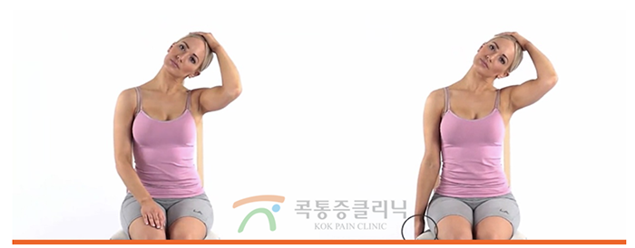
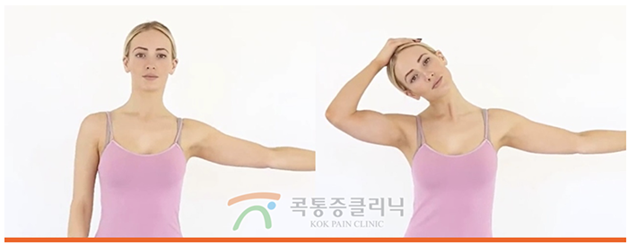
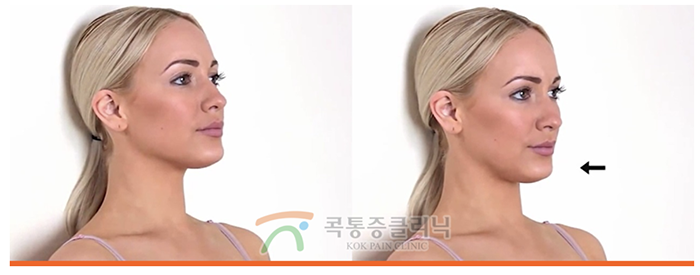
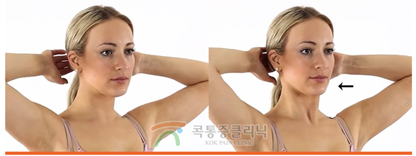
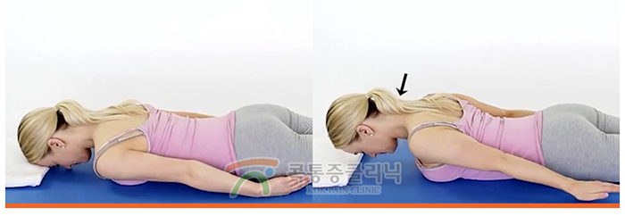

거북목 증후군은 어꺠와 목이 거북이 처럼 휘어지는 것을 보고 붙여진 증상 명칭입니다. 목이 앞으로 구부정하게 구부러지는 특징이있습니다.
이로 인해 경추성 두통이 발생할수도 있으며, 증상을 발리 교정하지 않으면 만성화 되기 쉽습니다.
1.흉쇄유돌근에 손을 올린 후 고개와 턱을 아래로 내립니다.(5초간 3회동작 유지)
2.천천히 귀 아래 근육과 어깨까지 연결된 근육을 당겨줍니다.(10초간 3회 동작 반복)
3.목을 옆으로 당겨줄 때 어깨가 따라 올라가지 않도록 합니다.(10초간 3회 동작 유지
4.귀 아래쪽 근욱과 팔을 어꺠 높이까지 벌려 충분히 당겨줍니다.
5. 척추를 곧게 편 후 턱을 뒤로 밀어줍니다.(5초간)
목이 뒤로 가도록 힘을 준 후, 양손을 앞으로 향하도록 합니다.(10초)
머리를 어꺠 높이에 맞출 후 척추 뒤쪽으로 당겨줍니다.(10초간)